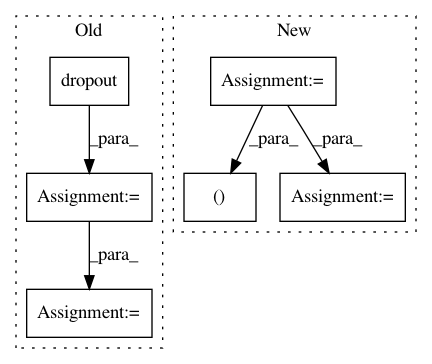

8030eeca74b6634f2a60168516573912aaa9cd65,model/modeling.py,BertForSequenceClassification,forward,#BertForSequenceClassification#Any#Any#Any#Any#,891
Before Change
def forward(self, input_ids, token_type_ids=None, attention_mask=None, labels=None):
_, pooled_output = self.bert(input_ids, token_type_ids, attention_mask, output_all_encoded_layers=False)
pooled_output = self.dropout(pooled_output)
logits = self.classifier(pooled_output)
if labels is not None:
loss_fct = CrossEntropyLoss()
loss = loss_fct(logits, labels)
return loss, logits
else:
return logits
After Change
super(BertAttention, self).__init__()
self.self = BertSelfAttention(config)
self.output = BertSelfOutput(config)
def forward(self, input_tensor, attention_mask):
self_output = self.self(input_tensor, attention_mask)
attention_output = self.output(self_output, input_tensor)
return attention_output
class BertIntermediate(nn.Module):
def __init__(self, config):
super(BertIntermediate, self).__init__()
self.dense = nn.Linear(config.hidden_size, config.intermediate_size)
In pattern: SUPERPATTERN
Frequency: 3
Non-data size: 6
Instances
Project Name: NVIDIA/sentiment-discovery
Commit Name: 8030eeca74b6634f2a60168516573912aaa9cd65
Time: 2018-11-20
Author: raulp@nvidia.com
File Name: model/modeling.py
Class Name: BertForSequenceClassification
Method Name: forward
Project Name: osmr/imgclsmob
Commit Name: c3ec7981fd91befe035b667bed8ea538c8853b97
Time: 2019-03-20
Author: osemery@gmail.com
File Name: pytorch/pytorchcv/models/pspnet.py
Class Name: PSPNet
Method Name: forward
Project Name: osmr/imgclsmob
Commit Name: 8dc869c9450419461e671ac3e74a6893fa9c6572
Time: 2019-04-01
Author: osemery@gmail.com
File Name: gluon/gluoncv2/models/deeplabv3.py
Class Name: DeepLabv3
Method Name: hybrid_forward